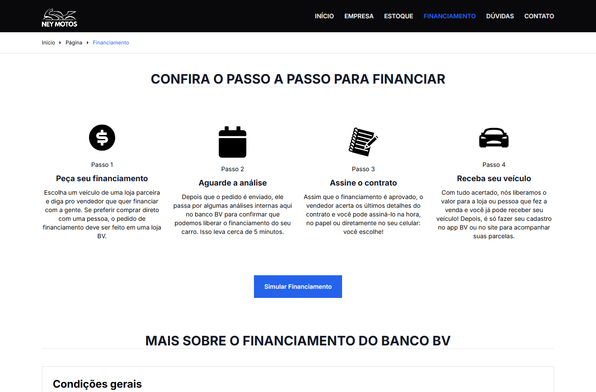
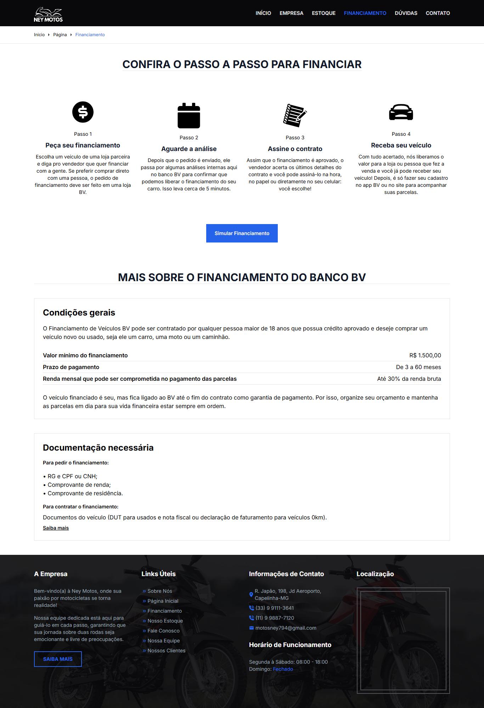

Sistema de Investigação de Marca e Identidade Online
https://nei-motos.vercel.app/financiamento
Prioridade: HIGH · Cenário: C_POSSIBLE_OFFICIAL_CHANNEL · Revisão humana: PENDING
Trata-se da página de financiamento de uma loja de veículos ('Ney Motos', hospedada em nei-motos.vercel.app) que oferta exclusivamente financiamento do Banco BV. Embora utilize marca e cabeçalho próprios da loja, reproduz textos institucionais do Banco BV em 1ª pessoa ('aqui no banco BV', 'nós liberamos o valor') sem adaptação, mantendo um CTA 'Simular Financiamento' que capta leads via WhatsApp privado. Além disso, omite completamente o CNPJ, a razão social e a declaração obrigatória de correspondente bancário prevista na Resolução CMN nº 4.935/2021, exigindo revisão prioritária. [Revisor: CONFIRM] Confirma-se a classificação REVIEW_REQUIRED com prioridade HIGH. Trata-se de página de financiamento de loja de veículos ('Ney Motos', hospedada em nei-motos.vercel.app) que promove exclusivamente o Financiamento de Veículos do Banco BV, reproduzindo texto institucional em primeira pessoa ('aqui no banco BV', 'nós liberamos o valor') e captando simulações via WhatsApp próprio, sem informar razão social, CNPJ, condição de correspondente bancário ou ouvidoria (Res. CMN 4.935/2021, art. 14, II e III).


| Ref | Tipo | Local | Conteúdo |
|---|---|---|---|
| E-URL | domain | url | URL final: https://nei-motos.vercel.app/financiamento (domínio: nei-motos.vercel.app) |
| E-DISC-001 | text | search_index | Índice de busca (grounding): vercel.app — **Nome do estabelecimento:** Ney Motos | **URL:** `https://neymotos.vercel.app/` (Página de Financiamento) | *, *"Escolha um veículo de uma loja parceira e diga pro vendedor que quer financiar com a gente"*), além de disponibilizar botão de *"Simular Financiamento"* dedicado exclusivamente às condições do BV | Hospedado em domínio gratuito (`vercel.app`), omite completamente a razão social, o CNPJ da loja e o aviso obrigatório de que atua apenas como correspondente bancário ou lojista parceiro, induzindo o consumidor a achar que está em um ambiente oficial do banco |
| E-SHOT-VIEWPORT | screenshot | viewport | evidence\Cfa13f2c115\attempt-1\viewport.png (sha256 a901b8d5d087d76a…) |
| E-SHOT-FULL | screenshot | page | evidence\Cfa13f2c115\attempt-1\fullpage.png (sha256 b80f521c7d96901e…) |
| E-TITLE | title | head | Financiamento de Motos - Ney Motos |
| E-META-1 | meta | head | description: Confira as opções de financiamento da Ney Motos e realize o sonho de ter sua moto própria. Oferecemos condições especiais, parcelas que cabem no seu bolso e aprovação rápida. Consulte agora! |
| E-HEAD-1 | heading | page | CONFIRA O PASSO A PASSO PARA FINANCIAR |
| E-HEAD-2 | heading | page | Peça seu financiamento |
| E-HEAD-3 | heading | page | Aguarde a análise |
| E-HEAD-4 | heading | page | Assine o contrato |
| E-HEAD-5 | heading | page | Receba seu veículo |
| E-HEAD-6 | heading | page | MAIS SOBRE O FINANCIAMENTO DO BANCO BV |
| E-HDR | text | header | INÍCIO EMPRESA ESTOQUE FINANCIAMENTO DÚVIDAS CONTATO |
| E-FOLD | text | viewport (acima da dobra) | Início Empresa Estoque Financiamento Dúvidas Contato Inicio Página Financiamento Confira o passo a passo para financiar Passo 1 Peça seu financiamento Escolha um veículo de uma loja parceira e diga pro vendedor que quer financiar com a gente. Se preferir comprar direto com uma pessoa, o pedido de financiamento deve ser feito em uma loja BV. Passo 2 Aguarde a análise Depois que o pedido é enviado, ele passa por algumas análises internas aqui no banco BV para confirmar que podemos liberar o financiamento do seu carro. Isso leva cerca de 5 minutos. Passo 3 Assine o contrato Assim que o financiamento é aprovado, o vendedor acerta os últimos detalhes do contrato e você pode assiná-lo na hora, no papel ou diretamente no seu celular: você escolhe! Passo 4 Receba seu veículo Com tudo acertado, nós liberamos o valor para a loja ou pessoa que fez a venda e você já pode receber seu veículo! Depois, é só fazer seu cadastro no app BV ou no site para acompanhar suas parcelas. Simular Financiamento Mais sobre o financiamento do banco BV Condições gerais |
| E-FTR | text | footer | A Empresa Bem-vindo(a) à Ney Motos, onde sua paixão por motocicletas se torna realidade! Nossa equipe dedicada está aqui para guiá-lo em cada passo, garantindo que sua jornada sobre duas rodas seja emocionante e livre de preocupações. SAIBA MAIS Links Úteis Sobre Nós Página Inicial Financiamento Nosso Estoque Fale Conosco Nossa Equipe Nossos Clientes Informações de Contato R. Japão, 198, Jd Aeroporto, Capelinha-MG (33) 9 9111-3641 (11) 9 9887-7120 motosney794@gmail.com Horário de Funcionamento Segunda à Sábado: 08:00 - 18:00 Domingo: Fechado Localização |
| E-NAV | nav | header | <https://nei-motos.vercel.app/> | INÍCIO <https://nei-motos.vercel.app/> | EMPRESA <https://nei-motos.vercel.app/sobre-nos> | ESTOQUE <https://nei-motos.vercel.app/estoque> | FINANCIAMENTO <https://nei-motos.vercel.app/financiamento> | DÚVIDAS <https://nei-motos.vercel.app/perguntas-frequentes> | CONTATO <https://nei-motos.vercel.app/contato> |
| E-CTA-1 | cta | page | Simular Financiamento |
| E-CTA-2 | cta | page | Saiba mais |
| E-CONTACT-1 | contact | page | Simular Financiamento <https://wa.me/+5533991113641?text=Ol%C3%A1!%20Gostaria%20de%20Fazer%20a%20simula%C3%A7%C3%A3o%20de%20financiamento.> |
| E-CONTACT-2 | contact | footer | (33) 9 9111-3641 <tel:+553399111-3641> |
| E-CONTACT-3 | contact | footer | (11) 9 9887-7120 <tel:+5511998877120> |
| E-IMG-1 | image | header (acima da dobra) | imagem alt='Ney motos logo' src=https://nei-motos.vercel.app/_next/image?url=%2F_next%2Fstatic%2Fmedia%2Flogo.a7149c55.png&w=640&q=75 (100x50, acima da dobra) |
| E-OFFICIAL-LINKS | link | page | Saiba mais <https://bv.com.br/saiba-mais/documentacao-necessaria> |
| E-TXT-001 | text | page | Escolha um veículo de uma loja parceira e diga pro vendedor que quer financiar com a gente. Se preferir comprar direto com uma pessoa, o pedido de financiamento deve ser feito em uma loja BV. |
| E-TXT-002 | text | page | Depois que o pedido é enviado, ele passa por algumas análises internas aqui no banco BV para confirmar que podemos liberar o financiamento do seu carro. Isso leva cerca de 5 minutos. |
| E-TXT-003 | text | page | Com tudo acertado, nós liberamos o valor para a loja ou pessoa que fez a venda e você já pode receber seu veículo! Depois, é só fazer seu cadastro no app BV ou no site para acompanhar suas parcelas. |
| E-TXT-004 | text | page | MAIS SOBRE O FINANCIAMENTO DO BANCO BV |
| E-TXT-005 | text | page | O Financiamento de Veículos BV pode ser contratado por qualquer pessoa maior de 18 anos que possua crédito aprovado e deseje comprar um veículo novo ou usado, seja ele um carro, uma moto ou um caminhão. |
| E-TXT-006 | text | page | O veículo financiado é seu, mas fica ligado ao BV até o fim do contrato como garantia de pagamento. Por isso, organize seu orçamento e mantenha as parcelas em dia para sua vida financeira estar sempre em ordem. |
| Dimensão | Sinal | Achado | Refs |
|---|---|---|---|
| VISUAL_IDENTITY | LEGITIMATE | A página utiliza cabeçalho e logotipo próprios da loja ('Ney Motos') e layout simples sem imitar as cores ou identidade visual oficial do Banco BV. | E-IMG-1 E-SHOT-VIEWPORT E-SHOT-FULL |
| DECLARED_COMMERCIAL_IDENTITY | CONFUSION | Embora exiba o nome fantasia 'Ney Motos' e endereço físico em Capelinha-MG no rodapé, omite completamente o CNPJ e a razão social do estabelecimento. | E-TITLE E-FTR E-DISC-001 |
| CORRESPONDENT_TRANSPARENCY | CONFUSION | Não há aviso explícito de que a loja atua como correspondente bancário ou intermediária independente do Banco BV, descumprindo as exigências de transparência da Resolução CMN nº 4.935/2021. | E-FOLD E-FTR E-SHOT-FULL |
| INSTITUTIONAL_LANGUAGE | CONFUSION | O texto explicativo da jornada de financiamento assume a voz institucional do próprio Banco BV em 1ª pessoa ('diga pro vendedor que quer financiar com a gente', 'análises internas aqui no banco BV', 'nós liberamos o valor'). | E-TXT-001 E-TXT-002 E-TXT-003 E-HEAD-6 |
| LOGO_USAGE | LEGITIMATE | Não foi identificado uso do logotipo gráfico do Banco BV na página; apenas o logotipo da própria loja 'Ney Motos' está presente no cabeçalho. | E-IMG-1 E-SHOT-FULL |
| SERVICE_JOURNEY | CONFUSION | A página inteira de financiamento apresenta exclusivamente condições e regras do Banco BV, posicionando um botão de ação ('Simular Financiamento') em meio ao texto em 1ª pessoa do banco. | E-CTA-1 E-TXT-004 E-TXT-005 E-SHOT-VIEWPORT |
| CONTACT_CHANNELS | CONFUSION | O botão 'Simular Financiamento' direciona para número de WhatsApp local (+55 33 99111-3641) e o rodapé exibe e-mail gratuito (gmail.com), sem informar canais oficiais de atendimento ou ouvidoria do Banco BV. | E-CONTACT-1 E-CONTACT-2 E-FTR |
| CONSUMER_CONFUSION | CONFUSION | A combinação de textos em primeira pessoa falando em nome do Banco BV, ausência de CNPJ/aviso de correspondente e captação direta via WhatsApp gera risco de confusão ao consumidor sobre a natureza da relação comercial. | E-DISC-001 E-TXT-002 E-CONTACT-1 E-SHOT-FULL |
Trata-se da página de financiamento de uma loja de veículos ('Ney Motos', hospedada em nei-motos.vercel.app) que oferta exclusivamente financiamento do Banco BV. Embora utilize marca e cabeçalho próprios da loja, reproduz textos institucionais do Banco BV em 1ª pessoa ('aqui no banco BV', 'nós liberamos o valor') sem adaptação, mantendo um CTA 'Simular Financiamento' que capta leads via WhatsApp privado. Além disso, omite completamente o CNPJ, a razão social e a declaração obrigatória de correspondente bancário prevista na Resolução CMN nº 4.935/2021, exigindo revisão prioritária.
Nenhum CNPJ ou razão social identificáveis no conteúdo coletado.
| Tipo | Valor | Ref | Contexto |
|---|---|---|---|
| domain | vercel.app | E-URL | |
| motosney794@gmail.com | E-FTR | ||
| Simular Financiamento <https://wa.me/+5533991113641?text=Ol%C3%A1!%20Gostaria%20de%20Fazer%20a%20simula%C3%A7%C3%A3o%20de%20financiamento.> | E-CONTACT-1 | ||
| partnership_declaration | parceira | E-DISC-001 | *, *"Escolha um veículo de uma loja parceira e diga pro vendedor que quer financiar com a gente"*), além de disponibilizar botão de *"Simular Financiamento"* dedicado exclusivamente às condições do BV |
Mapeamento indicativo para apoio à auditoria. Não constitui conclusão regulatória; a decisão definitiva pertence à auditoria.
Fonte: NORMATIVE
Art. 14. O contrato de correspondente deve estabelecer: [...] II - vedação à utilização, pelo contratado, de logomarca ou de outros atributos que sejam similares aos adotados pela instituição contratante em suas agências, postos de atendimento, sítio eletrônico na internet, aplicativo ou outras plataformas de comunicação em rede;
Evidência observada: E-IMG-1 E-SHOT-FULL E-SHOT-VIEWPORT
Fonte: NORMATIVE
Art. 14. O contrato de correspondente deve estabelecer: [...] III - divulgação ao público, pelo contratado, de sua condição de prestador de serviços à instituição contratante, identificada pelo nome com que é conhecida no mercado, com descrição dos produtos e serviços oferecidos e canais de contato da instituição contratante, inclusive de sua ouvidoria, em local visível, em destaque e em formato legível, por meio de: a) sítio eletrônico do correspondente na internet, acessível na página inicial; b) aplicativo e outras plataformas de comunicação em rede do correspondente; [...]
Hipótese: Divulgação ao público da condição de prestador de serviços à contratante ausente, insuficiente ou sem destaque. A norma disciplina correspondentes contratados; o responsável não foi identificado como correspondente.
Evidência observada: E-CONTACT-1 E-CONTACT-2 E-DISC-001 E-FOLD E-FTR E-HEAD-6 E-SHOT-FULL E-TITLE E-TXT-001 E-TXT-002 E-TXT-003 E-URL
Informação faltante:
Fonte: NORMATIVE
Art. 3º O correspondente atua por conta e sob as diretrizes da instituição contratante, que assume inteira responsabilidade pelo atendimento prestado aos clientes e usuários por meio do contratado.
Hipótese: Atendimento ao público prestado por meio do contratado em condições que podem não seguir as diretrizes da contratante. A norma disciplina correspondentes contratados; o responsável não foi identificado como correspondente.
Evidência observada: E-CONTACT-1 E-CONTACT-2 E-CTA-1 E-FTR E-HEAD-6 E-SHOT-VIEWPORT E-TXT-004 E-TXT-005
Informação faltante:
Se o responsável não for correspondente contratado, os indícios podem caracterizar uso indevido de marca ou fraude, fora do escopo da Res. 4.935: avaliar encaminhamento às áreas jurídica/segurança.
Limitações: requisitos contratuais/internos não fornecidos: mapeamento limitado ao texto normativo
Decisão: CONFIRM → REVIEW_REQUIRED / HIGH
Confirma-se a classificação REVIEW_REQUIRED com prioridade HIGH. Trata-se de página de financiamento de loja de veículos ('Ney Motos', hospedada em nei-motos.vercel.app) que promove exclusivamente o Financiamento de Veículos do Banco BV, reproduzindo texto institucional em primeira pessoa ('aqui no banco BV', 'nós liberamos o valor') e captando simulações via WhatsApp próprio, sem informar razão social, CNPJ, condição de correspondente bancário ou ouvidoria (Res. CMN 4.935/2021, art. 14, II e III).
| Tema | Severidade | Questionamento | Refs |
|---|---|---|---|
| Enquadramento do caso (case) | LOW | O analista rotulou o caso como C_POSSIBLE_OFFICIAL_CHANNEL, mas a página pertence claramente a uma loja de motocicletas terceira ('Ney Motos', em Capelinha-MG) atuando como lojista/correspondente sem transparência regulatória, e não a um possível canal oficial do banco. | E-TITLE E-IMG-1 E-FTR E-SHOT-FULL |
| domain_attribution | MEDIUM | Responsável pela página não identificado; a conclusão sobre a marca não pode ser atribuída a um estabelecimento específico. | E-URL |
| Fonte | Consulta / hipótese | URL original | Título / trecho |
|---|---|---|---|
| grounding | Objetivo: Lojas de motos que oferecem financiamento usando a marca em destaque.
Execute no Google Search as seguintes consultas (dorks):
- ("bv financeira" OR "Banco BV") motos financiamento loja -site:bv.com.br -site:bancobv.com.br -site:bvfinanceira.com.br -site:bvinvestimentos.com.br -site:napista.com.br -site:bvopen.com.br -site:meufinanciamentosolar.com.br -site:votorantim.com.br -site:vam.com.br -site:reclameaqui.com.br -site:jusbrasil.com.br -site:jus.br -site:weebly.com -site:site123.me
Liste de forma abrangente as páginas públicas encontradas (até 12 resultados distintos), informando para cada uma o nome do estabelecimento/perfil, a URL e como a marca é utilizada (destaque visual, título, feirão, simulador, redes sociais e se há ou não identificação clara de CNPJ e condição de correspondente bancário). H2-product:financiamento de moto | https://nei-motos.vercel.app/financiamento | vercel.app **Nome do estabelecimento:** Ney Motos | **URL:** `https://neymotos.vercel.app/` (Página de Financiamento) | *, *"Escolha um veículo de uma loja parceira e diga pro vendedor que quer financiar com a gente"*), além de disponibilizar botão de *"Simular Financiamento"* dedicado exclusivamente às condições do BV | Hospedado em domínio gratuito (`vercel.app`), omite completamente a razão social, o CNPJ da loja e o aviso obrigatório de que atua apenas como correspondente bancário ou lojista parceiro, induzindo o consumidor a achar que está em um ambiente oficial do banco |
Original: https://nei-motos.vercel.app/financiamento
Final: https://nei-motos.vercel.app/financiamento
| Artefato | Caminho | SHA-256 | Bytes |
|---|---|---|---|
| screenshot_viewport | evidence\Cfa13f2c115\attempt-1\viewport.png | a901b8d5d087d76a5ecf56d5d31a60c56139f881b3ad7474a98bb3a6b5e385d4 | 112500 |
| screenshot_full | evidence\Cfa13f2c115\attempt-1\fullpage.png | b80f521c7d96901e8f5ac5630003afdd872f9ec62e1b0c32630f459fa2bb808d | 602920 |
| html | evidence\Cfa13f2c115\attempt-1\page.html.txt | 97d2880bd89566dc3e3f0997773eb7ea9db5a6445f24ec0a4449f1b7b70fd9e1 | 55063 |
| text | evidence\Cfa13f2c115\attempt-1\text.txt | 2b42b1c0b91bd4452700b7f0b11a4e99ea43cc167eafbfa84beadd4ce758a087 | 2554 |
| page_data | evidence\Cfa13f2c115\attempt-1\page.json | 77b24e28034f7c388192b053acb02386767d82f75979a020125d69e633e2f0de | 9393 |
| Quando | De | Para | Nota |
|---|---|---|---|
| 2026-11-23T14:17:58+00:00 | DISCOVERED | QUEUED | prioritised (score 1.0) |
| 2026-11-23T14:57:39+00:00 | QUEUED | COLLECTING | |
| 2026-11-23T14:57:51+00:00 | COLLECTING | COLLECTED | |
| 2026-11-23T14:57:51+00:00 | COLLECTED | ANALYZING | |
| 2026-11-23T14:58:26+00:00 | ANALYZING | REVIEWING | |
| 2026-11-23T14:58:45+00:00 | REVIEWING | COMPLETED |